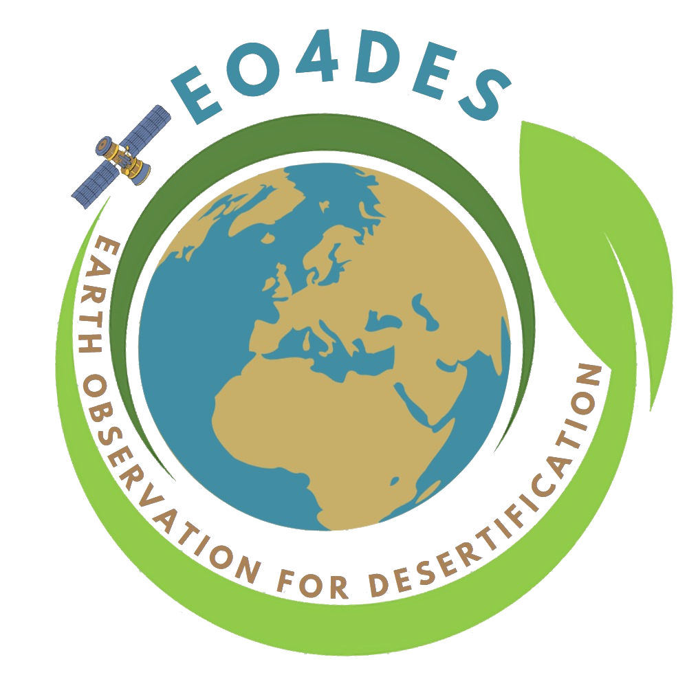

EO4DES WebGIS Demo
Earth Observation for Desertification

WebGIS Layers
Study areas
Overview
Catania - Sicily
Lecce - Puglia
Study area
Catania - Sicily
Lecce - Puglia
Satellite index
NDVI
Albedo
Year
Month
August
September
October
← Previous
Next →
Thematic layer
Thermal anomaly — 14/08/2024
Zonal statistics DT — 14/08/2024
Land Surface Temperature — 14/08/2025
Show thematic layer
Static GitHub Pages demo: no GeoServer/PostGIS connection is required.
Legend